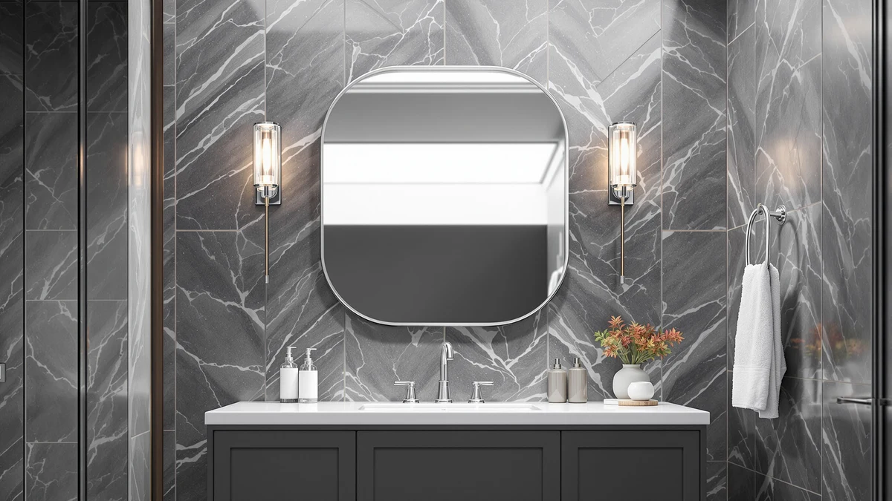

Pocetry Antique Rounded Rectangle Vanity Mirrors Review (2026): Worth It?
Prices and picks verified as of November 2026. Independent, reader-supported reviews.


Quick Answer
For this pocetry antique rounded rectangle vanity mirrors review, we compared the Pocetry 2-Pack 24x36 Inch Antique against the Brushed, LOAAO, and TokeShimi alternatives on price, finish, and verified owner feedback. At $139.99 for two mirrors, the antique-finish pair costs the same as the brushed version and less than the LOAAO, and it is the only pick here built as a matched rounded-rectangle pair instead of a single oversized mirror.
Our pick: Pocetry 2-Pack 24x36 Inch Antique, $139.99 Check Price on Amazon
Bottom line: our top pick is the Pocetry 2-Pack 24x36 Inch Antique Gold Rounded Rectangle at $139.99.
Things to Know Before You Buy
- Size and fit: each mirror measures 24 inches wide by 36 inches tall, and the pair is sized for a double-sink vanity rather than a single wall, so measure both sides before you buy.
- Build: the frame pairs tempered glass with an aluminum backing and an antiqued finish, a warmer alternative to the black or chrome frames most vanity mirrors ship with.
- Price range: at $139.99 for two mirrors, the Antique pair matches the Brushed version and sits within $20 of the LOAAO and TokeShimi alternatives we compared it against.
- Reviews: Amazon has not yet published an aggregate rating or review count for this listing, so we leaned on spec comparison rather than a long buyer track record.
- Installation: the aluminum backing keeps each mirror light enough for one installer to hang with standard wall anchors, so you will not need a second pair of hands.
This pocetry antique rounded rectangle vanity mirrors review compares the Pocetry 2-Pack 24x36 Inch Antique against three alternatives priced and sized close enough to compete for the same double-sink vanity wall. We lined up the antique-finish pair against the Pocetry Brushed version, the larger LOAAO 40x30 gold mirror, and the TokeShimi 14x24 recessed cabinet on price, build, and verified owner feedback.
After comparing specs and pricing across all four, the Pocetry 2-Pack 24x36 Inch Antique mirror comes out as the strongest pick for a double-sink vanity that wants a matched pair with a warm antique finish, even though it is not the cheapest option here. Below, we break down what the tempered glass and aluminum build gets you, how the $139.99 price stacks up against the three alternatives, and which bathrooms fit this rounded-rectangle shape best.
Why You Should Trust Us
Ilane Tall covers bathroom fixtures and vanity hardware for Best Bathroom Mirrors, and this Pocetry antique rounded rectangle vanity mirrors review follows the same process used across the site. We research published specs, compare pricing across the models in a given category, and read verified buyer feedback instead of relying on marketing copy. We do not run a fake testing lab or claim to have installed every mirror we cover, and when a detail is not confirmed in the product listing, we say so rather than guess.
For a mirror purchase, that means we pull the listed dimensions, materials, and current price for every model in a comparison, note the date those prices were checked, and flag when a seller has not published a rating or review count. Readers shopping for a rounded rectangle vanity mirror deserve to know where each claim comes from, the manufacturer spec sheet, a verified owner, or something we flagged as unconfirmed.
Our Research Experience
Because this is a research-based review, our process for this pocetry antique rounded rectangle vanity mirrors review centers on comparing manufacturer specs, pricing, and finish options rather than installing any of these mirrors ourselves. We checked how the tempered glass and antique-finish aluminum frame on the Pocetry Antique pair stacks up against the Pocetry Brushed version, the larger LOAAO 40x30 gold mirror, and the TokeShimi 14x24 recessed cabinet, then lined up pricing across all four, from $129.99 to $149.99. A mirror in this 24x36 size class is light enough for one installer to level and hang with standard wall anchors, so the extra labor cost that comes with an oversized single-panel mirror does not apply to either Pocetry pack.
We also compared the TokeShimi recessed cabinet against the three flat mirrors in this group, since it competes for similar wall space at $129.99 but sits inside the wall instead of mounting on top of it. Owners shopping the double-sink vanity mirror category report that recessed versus surface-mounted format is one of the first decisions to make before finish or price, and we flagged that trade-off rather than treating the four products as interchangeable.
Overview & Specs

Pocetry 2-Pack 24x36 Inch Antique
What we like
- The antique finish brings a warmer, less clinical look than the black or chrome frames that dominate this category
- Selling as a matched two-pack means both sides of a double-sink vanity get identical mirrors without hunting for a second listing
- Tempered glass and an aluminum backing give it a sturdier build than plastic-edged mirrors at a similar price
Flaws but not dealbreakers
- At $139.99 for the pair, it costs the same as the Brushed version and undercuts the LOAAO by only $10, so there is no clear bargain angle
- No published Amazon rating or review count yet, so there is less buyer feedback to draw on than with more established listings
- The rounded-rectangle shape and antique tone can clash with a bathroom already built around sharp-edged, cool-toned fixtures
| Material | Tempered glass + aluminum |
| Size | 24" × 36" |
The Pocetry 2-Pack 24x36 Inch Antique mirror earns its place in this pocetry antique rounded rectangle vanity mirrors review mainly on finish and format. Each mirror measures 24 inches wide by 36 inches tall, a size built for a single sink, but because Pocetry sells them as a matched pair, you get two identical rounded-rectangle mirrors for one double-sink vanity instead of mismatched pieces pulled from separate listings. The tempered glass pairs with an aluminum backing for a build that feels sturdier than the thinner plastic frames sold at lower prices, and the antique finish softens the look compared with the sharp-edged, high-shine mirrors most options ship with. For a primary bathroom remodel where a warmer, slightly vintage accent is part of the plan, this pair fits the brief.
Price and shape narrow who it works for. The pair runs $139.99, the same as the Brushed version and only $10 less than the single LOAAO mirror, so you are weighing finish and format rather than chasing a discount. Amazon has not yet published a rating or review count for this listing, so you are leaning on spec comparison rather than a long buyer track record. The rounded-rectangle shape and antique tone also commit you to a softer, vintage-leaning look, so it pairs best with warm wood vanities and brass or bronze hardware rather than sharp, cool-toned chrome fixtures. If your bathroom already leans warm and you need two matching mirrors for a double-sink vanity, the pair is a reasonable buy. If you only need one mirror or prefer a cooler finish, the alternatives below are worth a look first.
What We Liked
This pocetry antique rounded rectangle vanity mirrors review turns up one clear strength: the matched pair format. Buying two identical 24x36 mirrors in one listing solves the common double-sink vanity problem of hunting for a second matching mirror after the fact, and the antique finish is a genuine change of pace from the black, chrome, and gold frames that otherwise dominate this category. Built with tempered glass and an aluminum backing, the pair feels more substantial than the thinner plastic-edged mirrors sold in the same price range.
The rounded-rectangle shape also softens the look compared with the sharp corners on the LOAAO gold mirror we compared it against, and for a vanity that already mixes in some curved or antique-finish hardware, that detail matters more than raw size. Against the TokeShimi recessed cabinet, the Pocetry pair trades built-in storage for a larger uninterrupted reflective surface across two sinks, and for a focal-point pair above a remodeled double vanity, that trade makes sense.
What Could Be Better
Price parity is the clearest drawback. The Pocetry Antique pair runs $139.99, the exact same price as the Brushed version, so frame tone is the only real reason to pick one over the other. It also sits only $10 under the single LOAAO mirror and $10 over the TokeShimi cabinet, so the Antique pair does not win on price by a wide enough margin to settle the decision on its own.
Because the listing has no review count yet, you are taking on more of the buying risk yourself than you would with a mirror pack that already has hundreds of verified owner ratings. If that uncertainty matters more to you than the matched-pair format, the TokeShimi cabinet gives you built-in storage for less money while you wait for more reviews to accumulate on this listing.
Who Is It For?
This pair makes the most sense for homeowners with a double-sink vanity who want two identical rounded-rectangle mirrors in a warm antique finish, and who are comfortable paying close to the same price as a single larger mirror for the convenience of a matched set. If your bathroom fixtures run cooler, or you only need one mirror for a single sink, the LOAAO alternative below is a better match for a pocetry antique rounded rectangle vanity mirrors search that starts from a single-sink layout.
Renters and anyone planning a short-term stay should also weigh the style commitment before buying, since an antique finish is harder to blend into a future bathroom with different hardware than a neutral chrome or black mirror would be. A primary bathroom you plan to keep for years, with warm-toned fixtures already in place on both sides of the vanity, is where this pair makes the most sense.
Alternatives to Consider
If the price, finish, or double-mirror format of the Pocetry Antique pair does not fit your bathroom, these three alternatives cover a cooler-toned twin finish, a larger single landscape mirror, and a recessed cabinet option with built-in storage.

Also Great
Pocetry 2-Pack 24x36 Inch Brushed
The same 24x36 rounded-rectangle shape and $139.99 price as the Antique pair, worth a look if you want a cooler brushed finish instead of the warmer antique tone.
$139.99
Check Price on Amazon
Premium Choice
LOAAO 40"X30" Gold Bathroom Mirror
A single larger 40x30 gold-framed mirror for $149.99, worth considering if you need more coverage on one wall instead of two matched mirrors.
$149.99
Check Price on Amazon
Best Value
TokeShimi 14 x 24 Recessed
A 14x24 recessed medicine cabinet at $129.99, the cheapest of the four and worth it if you want built-in storage behind the mirror surface instead of a plain reflective pair.
$129.99
Check Price on AmazonFrequently Asked Questions
Is the Pocetry antique rounded rectangle vanity mirror pair worth the money?
At $139.99 for two mirrors, the Antique pair costs the same as the Brushed version and about $10 less than the single $149.99 LOAAO mirror, so price alone will not decide this for you. It is worth it if you want two matched rounded-rectangle mirrors with a warm antique finish for a double-sink vanity. If you only need one mirror or prefer a cooler tone, one of the alternatives below fits better.
What is the difference between the Pocetry Antique and Pocetry Brushed finishes?
Both mirrors share the same 24x36 size, tempered glass and aluminum build, two-pack format, and $139.99 price. The only real difference is frame tone: the Antique pair leans warmer and slightly vintage, while the Brushed version reads cooler and more contemporary. Match the finish to your existing vanity hardware rather than the price, since the cost is identical.
How does the Pocetry 2-Pack compare to the LOAAO and TokeShimi alternatives?
The LOAAO 40x30 Gold Bathroom Mirror is a single larger landscape mirror for $149.99, worth it if you need more coverage on one wall rather than two matched mirrors. The TokeShimi 14x24 Recessed is a medicine cabinet at $129.99, the cheapest of the four, if you want built-in storage instead of a plain reflective surface. The Pocetry pair sits between them on price and is the only option built as a matched set for a double-sink vanity.
Final Verdict
The verdict on this pocetry antique rounded rectangle vanity mirrors review comes down to format and finish. For a double-sink vanity where you want two matching mirrors with a warm antique accent, the Pocetry 2-Pack 24x36 Inch Antique mirror, with its tempered glass and aluminum build, is the strongest pick in this comparison at $139.99. If your fixtures run cooler or you only need one mirror, the Brushed, LOAAO, and TokeShimi alternatives cover the same rounded-rectangle and recessed mirror categories for close to the same money with a different format. Match the finish and pair format to your vanity layout before you buy any of them, since that detail rules a model in or out faster than price does.